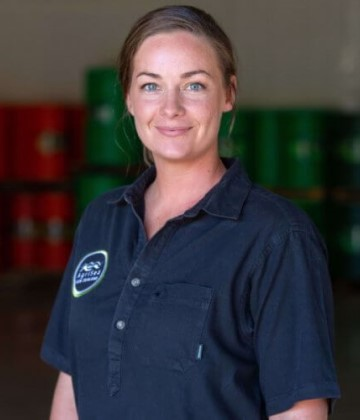

Clare Bradley is the Director and General Manager of Science, Research and Development at AgriSea. AgriSea is an award winning, family owned seaweed company at the forefront of the biostimulant industry in NZ. The team makes Biostimulant fertilisers and animal feeds developed from seaweed.
In this edited conversation with Peter Green, Clare spoke abou....

Could you explain how AgriSea has evolved to where it is now?
AgriSea is currently a second generation, Maori-owned family business in New Zealand. Originally, the founders were teachers and while on a WOOFing holiday, working around the country on organic farms for food and board, they came across one farm in particular which really stood out. It was one of those tough, wet fungal summers where all the trees peach trees had brown rots and animals had facial eczema. Yet there was this one farm which was really healthy, a really deep green and no awful disease issues with animals or plants. The main input on this farm was seaweed. The couple then started researching seaweed all around the world and started fermenting a brown kelp in New Zealand, and trying it out on their own home garden. It grew from there.
When did you join exactly?
My husband is the son of the founder and I married him 16 years ago. Prior to that, I was working in the remote Amazon Rainforest with indigenous communities, helping them to establish micro-enterprises while keeping the rainforest standing. I've been full-time in the business for five years.
What challenges have you really encountered or more challenges? Does the enterprise encounter these claiming?
Supply of raw seaweed has definitely been a challenge which has represented something of a chicken and the egg scenario. That's because you have to grow sales to a good enough volume to reinvest into r&d and supply chains. However, you need enough supply to grow the sales. We've got a volume base in terms of biostimulants, but also from our waste streams, we're moving up the value chain. So if we can't grow by pure volume, then the value proposition comes into play. That's definitely been a challenge and we've invested very heavily into research around aquaculture and also the implications of wild harvest in New Zealand. We use a trade secret fermentation process, so when we couldn't get the Cloner radiata then we looked at other seaweed species to varying degrees of success. In fact, I think we were almost kicked out of town with the smell that we made when we use macrocystis. Developing our fermentation techniques to other biomass has been a challenge. Skepticism has been a real challenge, particularly relating to the efficacy of seaweed biostimulants for agriculture, horticulture, and animal health. Now that science is evolving and we're understanding gene expression and a whole lot of new ways of measuring how seaweeds do what we do, in that, you know, it's much more accepted. Also, things always take longer than you expect.
What's your future projection of what the seaweed industry is going to look like over the coming 5-10 years?
Seaweed has a huge opportunity nationally for New Zealand, but also the world. It's a resource which requires no fresh water, no fertiliser, no inputs. There is huge potential in things like future proteins, and circular bio-economy to use the nutrient of the land. It's also going to require a lot of collaboration. There are a lot of people coming into the sector with big dreams, big theories. However, the practicalities of growing seaweed, managing supply chains, remote coastal communities, and market, needs better collaboration across the whole space.
What's next for AgriSea?
We're really keen on ensuring that we have a brighter future for the future generations. We feel our part to play in that concerns reducing the environmental impacts of agricultural farming. That might be reducing fertiliser use, synthetic biocide use etc. That's one of our key aims as people, as a phanao, and as a company. In terms of being able to grow and scale, if we can't always grow through volume, then we grow through value. We have a number of projects where we are creating multiple product cascades from our waste stream. We've got nanocellulose hydrogels and crystals, which should be used in things like cosmetics, regenerative medicine. So we're producing a whole whole range of high tech, high value things from our waste stream.
Is any of that patented?
We have the licencing agreement. From the start, it was a project funded by the New Zealand government called a smart ideas project with a science team at an institute called Cylon. They are forestry experts, and so they know nanocellulose and bioprocessing, inside and out. We had the licencing agreement for that technology. There's a quite a unique process and we're running our intellectual property through a trade secret.
Is the farming industry the most demanding for our products at the moment? Are you noticing any trends from other industries demanding for your products?
This year we've gone into national distribution with farm source who are owned by frontiera, one of the biggest dairy companies in the the world. They have surveyed their farmers who say that they want alternatives. They want well researched and proven options for them to farm into the future. Definitely an upswing in demand there. That's really exciting for us. In terms of other uses of our products, we have four companies. We've got Agri Sea, Ocean Organics, Marine Innovations and Agri-technologies. The hydro gels, cosmetics is definitely one of our key approaches, but also the Human Nutrition space as well. We've just got some extra funding and we're running some research for human nutritional supplements as well.
What advice might you give to your younger self, or someone starting out on their journey with seaweed projects?
Understanding your values and partnering with others based on values is almost like our superpower. For us as people as a phanoa- owned business as a valued led business, we need to have the same sort of aspirations as the people we partner and collaborate with. It's that old saying, if you want to go fast, go alone but if you want to go far go together.
What books might you recommend to someone who's trying to build ventures in this space?
I like"Eat Like a Fish" by Bren Smith. We've been doing some work with them and helping in another collaboration, bringing the greenwave model to New Zealand. That's a project that should be getting up and running over the summer. Otherwise David Attenborough is a hero of mine.